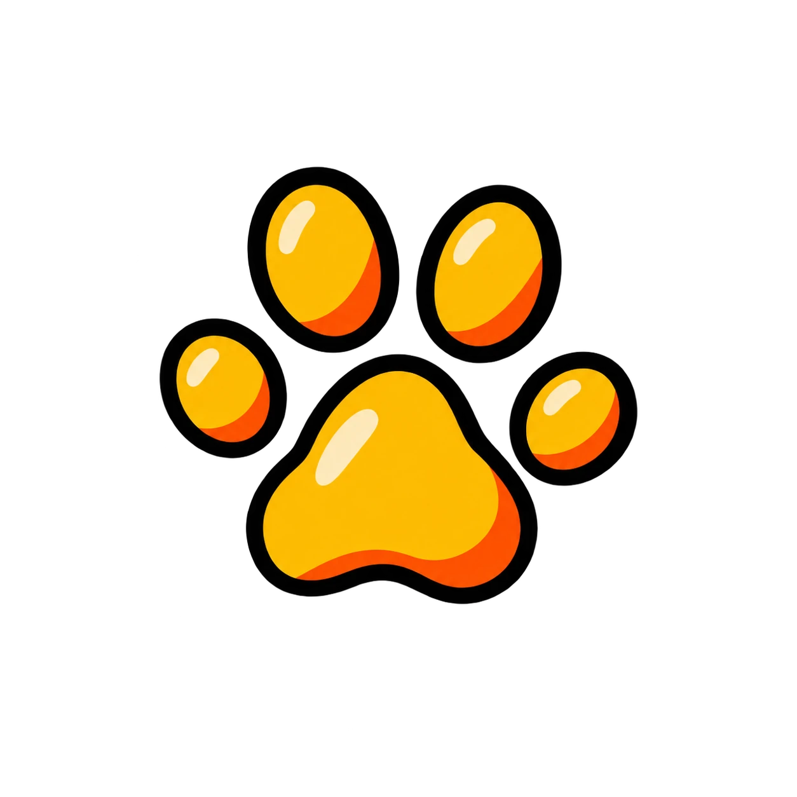
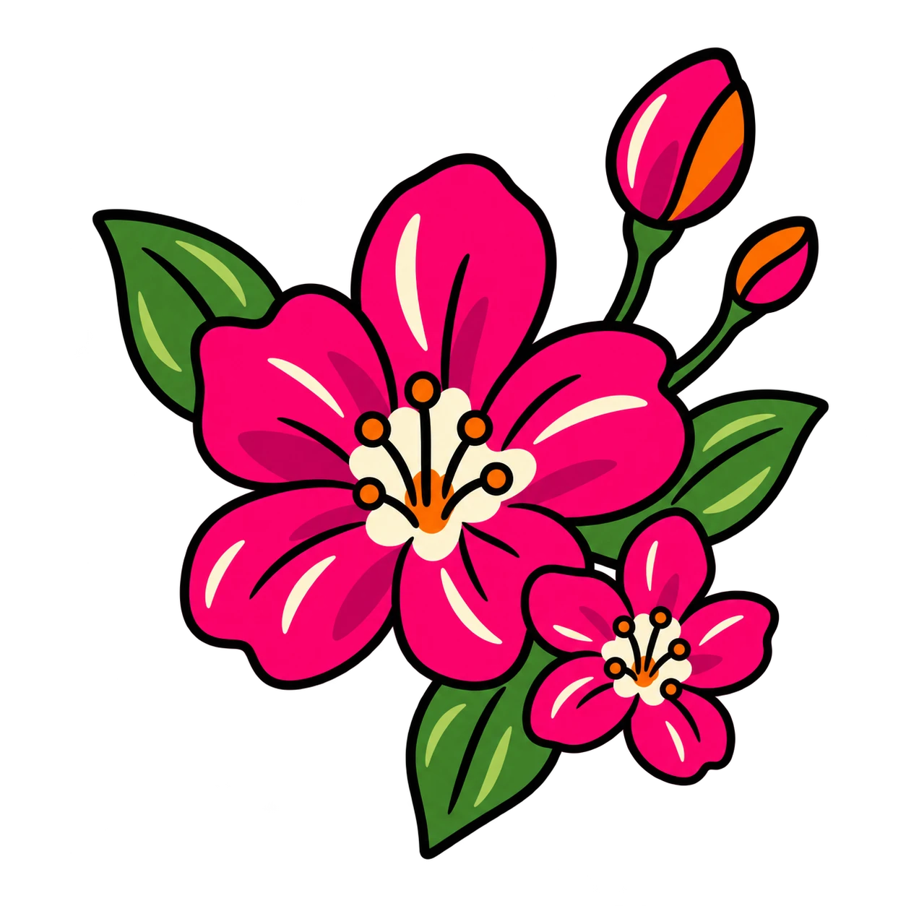
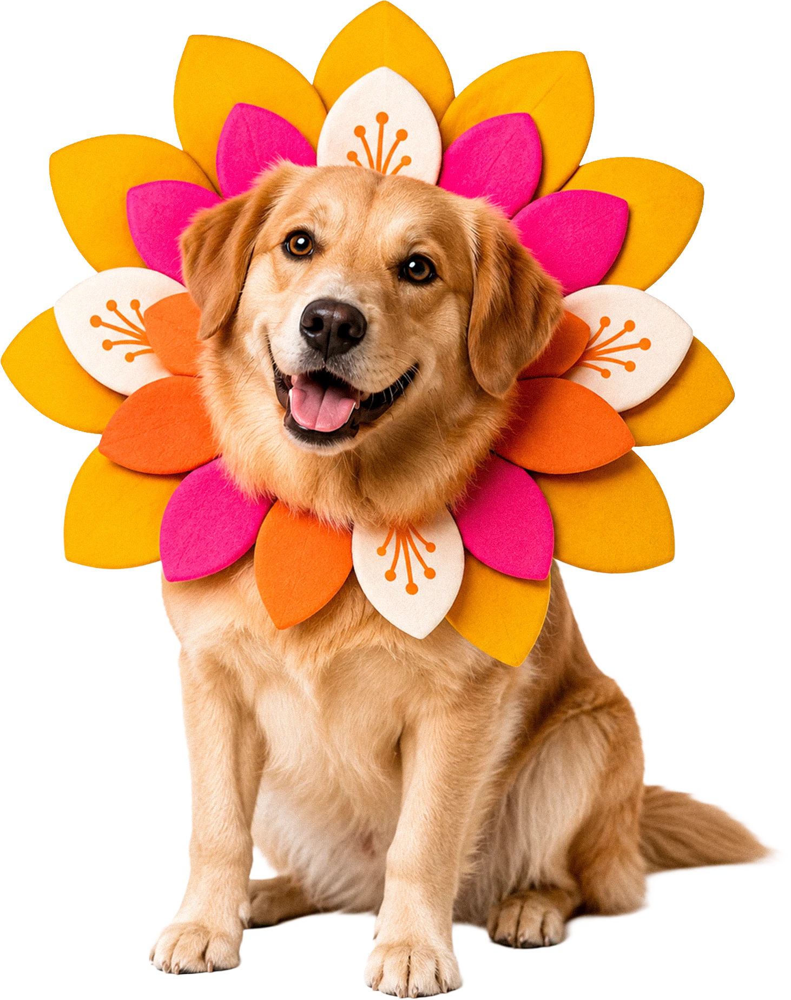

O começo
Foco em educação básica de saúde e convivência responsável, com orientações diretas e materiais simples para levar para casa.
Cãominhada do Pet Shop Pantaneiro
Desde 2019, a Cãominhada reúne pets, tutores e a comunidade em torno do cuidado, da convivência responsável e do amor pelos animais.
A cada edição, novos passos se juntam a essa história que continua crescendo junto com Poconé.



Nossa História
O que começou em 2019 como uma iniciativa de educação e convivência responsável foi crescendo junto com Poconé.
Ao longo de cinco edições, a Cãominhada ampliou encontros, ações de cuidado e iniciativas em benefício dos animais.
Relembre cada edição da Cãominhada.
Foco em educação básica de saúde e convivência responsável, com orientações diretas e materiais simples para levar para casa.
A Cãominhada retorna fortalecendo a participação da comunidade e ampliando as ações voltadas ao cuidado e à conscientização.


A iniciativa cresce, reúne novas parcerias e amplia o envolvimento da comunidade em ações voltadas à proteção e ao cuidado com os animais.
Premiações, apresentações e estações de orientação ampliam a experiência e ajudam a consolidar a Cãominhada como um encontro esperado pela cidade.


A Cãominhada se fortalece como ponto de encontro entre tutores, pets, parceiros e pessoas que compartilham o cuidado com os animais.

A história da Cãominhada continua.
E você pode fazer parte dela.